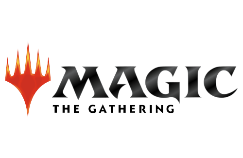
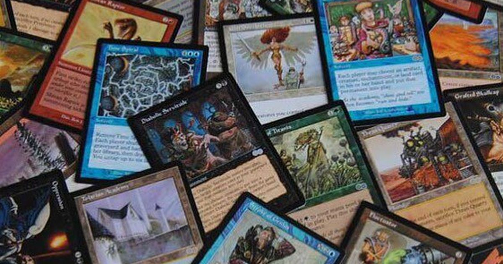

Magic the Gathering, MTG ou simplemente Magic
É um jogo de cartas colecionáveis (TCG, Trading Card Game) criado por Richard Garfield e desenvolvido pela Wizards of the Coast, no qual os jogadores utilizam um baralho de cartas construído de acordo com o seu modo individual de jogo para tentar vencer o baralho adversário. Criado em 1993, Magic foi o primeiro TCG produzido e continuado até hoje, atualmente conta com aproximadamente 12 milhões de jogadores ao redor do mundo(Games Magazine) 
Historia
A historia gira em torno de Planeswlakers. Poderosos magos capazes de viajar átraves dos planos da existência. Há uma infinidade de mundos no multiverso, e os Planeswlakers são os unicos capazes de transitar entre eles, expandindo seu conhecimento e poder através das experiencias que lá vivenciam.
Como a história é contada?!Atualmente
- Desde da sua criação foram lançados ao todo 98 expansões, passando por varios temas:
Egito antigo, Ciberpunk, Oriental, Mafia, Medieval, Futurista, Jurassico, entre outros.
- Possuindo ate entao 24.325 Cartas únicas